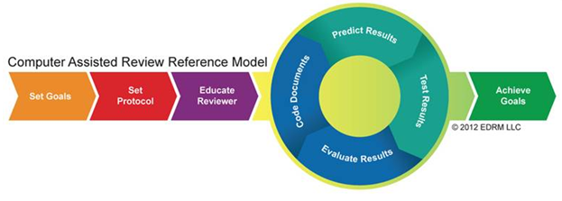

Important: All TAR-related components are defined as needed for proper TAR processing; it is recommended that the configurations of these components not be changed except as described in the following procedures.
As the workflow diagram on Manage TAR Projects indicates, various
tasks are required after the TAR project is created. The tasks, covered
in this section, focus on
|
|
Important: All TAR-related components are defined as needed for proper TAR processing; it is recommended that the configurations of these components not be changed except as described in the following procedures. |
Technology Assisted Review (TAR) is a process of having computer software electronically classify document collections based on input from expert reviewers to expedite the organization and prioritization of the document review. This process allows case teams to retrieve and review documents with a higher likelihood of relevance to understand their case, meet discovery deadlines, prepare for depositions, and more.
The system classification may also include broad topics pertaining to discovery responsiveness, privilege, and other designated issues. TAR may dramatically reduce the time and cost of reviewing electronically stored information (ESI).
The TAR process relies heavily on math and statistics and leverages proven sampling techniques with advanced algorithms to predict results. Analytics employs an analytics index for TAR that uses the k-nearest neighbors algorithm (kNN) to make a prediction for unreviewed documents where k = 40. This means that the 40 most similar training documents are used to make a prediction for an unreviewed document. This approach matches the decision making in a true document review. With 40NN, there is a balance between subtle variations in the document that matches a reviewer’s decision-making process more closely.
The following diagram shows the step-by-step workflow when using TAR, regardless of the type of review application that uses this technology.

Each step in the workflow is described as follows:
Before starting the TAR process, case teams must decide the outcome that they would like to accomplish for their case. This would include:
The reduction and culling of not-relevant documents
-or-
The prioritization of the most substantive documents
-or-
The quality control of the human reviewers.
This is the process of building the coding rules as well as the initial training sample set of documents that are to be used. The documents may also include broad topics pertaining to discovery responsiveness, privilege, and designated issues. The case team may consider creating new documents that contain the facts of the case in order to use them as examples. The review team can set the statistical sampling parameters to meet the determined 0.7 Recall set in the TAR Summary Report.
This is the process of ensuring that the expert reviewers understand the protocol about how to categorize documents before starting the TAR Review. The expert reviewers must have a deep understanding of the case, facts, and issues in order to accurately train the system.
In an effort to adequately train the system, human reviewers must apply subjective coding decisions to documents. Expert reviewers will assess these documents and tag them as either Responsive or Non Responsive. The reviewer also has the option to not use the document as an example.
After providing the system with some example documents, the act of finding similar documents for a given topic is called categorization. The expert reviewers identify each document’s relevancy to a case so that other documents in the population can then be “categorized” and predicted as relevant or not relevant.
This process is also known as the validation round, in which human reviewer(s) validate the documents that were categorized by the system. TAR uses statistical sampling of documents to be reviewed in order to continue to train and fine-tune the document categorization and to satisfy the confidence level set by the case team. Reviewer(s) may agree or disagree with the category applied by the system.
The process of running metric reports to evaluate whether the TAR system has achieved the goals set by the case team, or if the review team must continue to review documents and perform additional validation rounds.
An optional step that is also known as the Certification review process, if the set goal was to eliminate and not review the non-relevant documents classified by the system. The case team will end the TAR workflow and move to the next phase in the review. This includes reviewing any documents that could not be categorized by the system (that is, media files, diagrams, and so on). The certification process is not required if the case team decides to review all documents, even the classified as not relevant.
If the TAR process had been used to categorize documents based on responsiveness, case teams may continue to use the same training process to review data produced by opposing counsel. Additional TAR workflows can be created to further categorize the documents for privilege and other case issues.
Related pages: